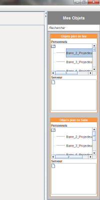
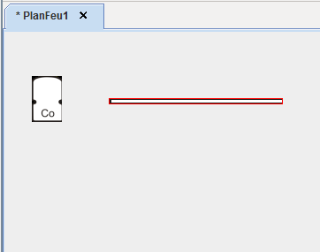
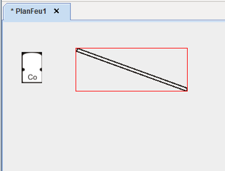
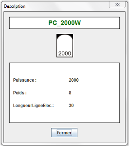

Avant de pouvoir utiliser un objet, vous devez avoir un plan d'ouvert. Pour créer un objet, veuillez vous référer à l'aide sur la création d'objet.
Pour placer un objet sur le plan, sélectionnez le dans le menu de droite

Puis glissez le sur le plan en maintenant le bouton de la souris (ou double-cliquez dessus, ou faites clique droit puis ouvrir) :

Construisez ainsi votre plan en déplaçant les objets. Ceux-ci seront superposés en fonction de leur type (ex: les barres seront en dessous des projecteurs).
Pour annuler une action (ex: déplacement d'un objet), cliquez sur le bouton .
Pour rétablir une action cliquez sur le bouton .
Pour tourner un objet, sélectionnez le puis tournez la molette de la souris :

Faites clique-droit, puis Description, vous verrez apparaître cette fenêntre :

Pour supprimer un objet, sélectionnez le, puis faite un clic droit puis supprimer.